Worlds
Every Corps has a home. These are the worlds that shaped the Green Lantern mythos — fortresses, sanctuaries, and crime scenes, each soaked in its Corps' light.
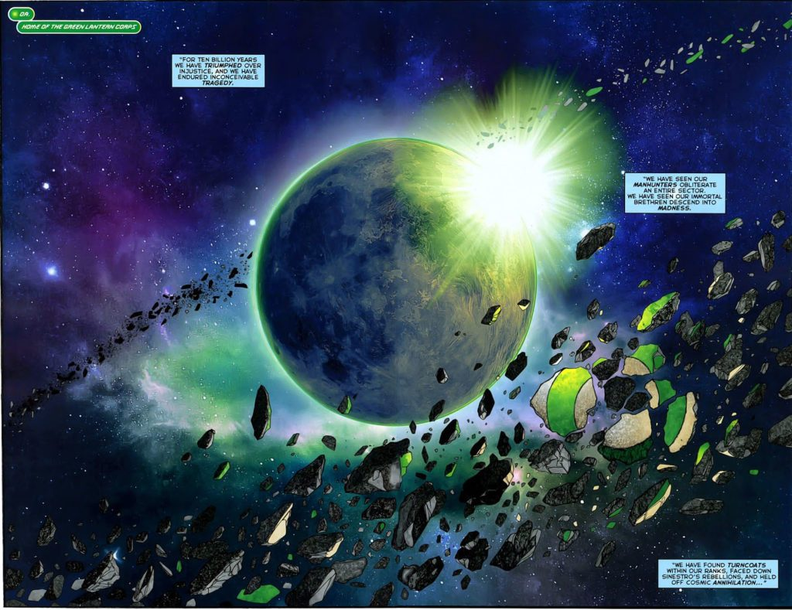
Oa
The heart of the Green Lantern Corps — the oldest planet in the universe.
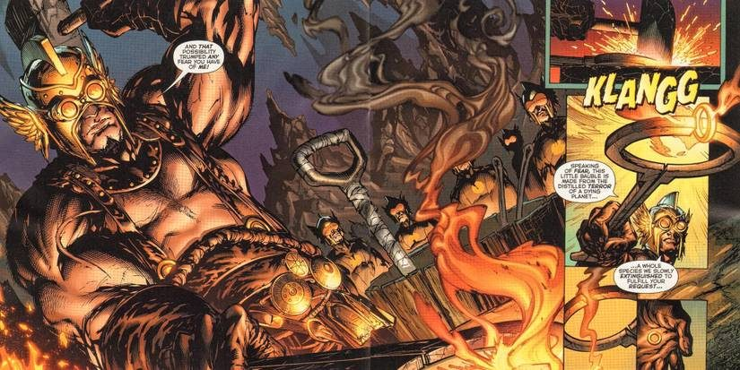
Qward
The antimatter universe's dark mirror — home of the Weaponers and the Sinestro Corps.
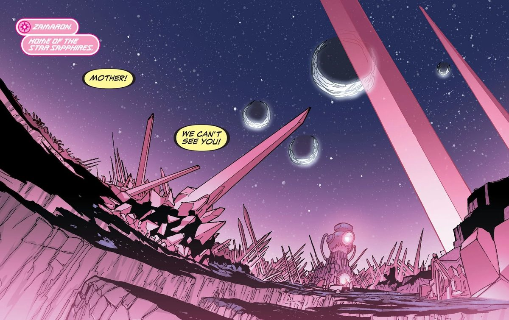
Zamaron
The violet world of the Zamarons — where love is weaponized.
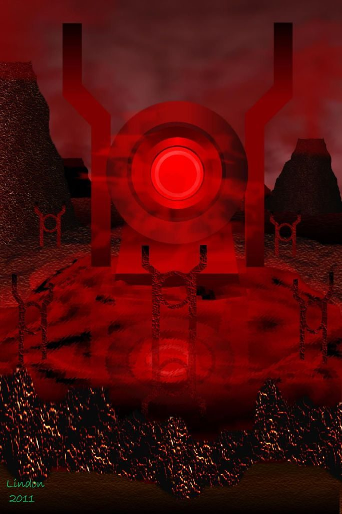
Ysmault
A dead world soaked in blood — the Red Lanterns' fortress.
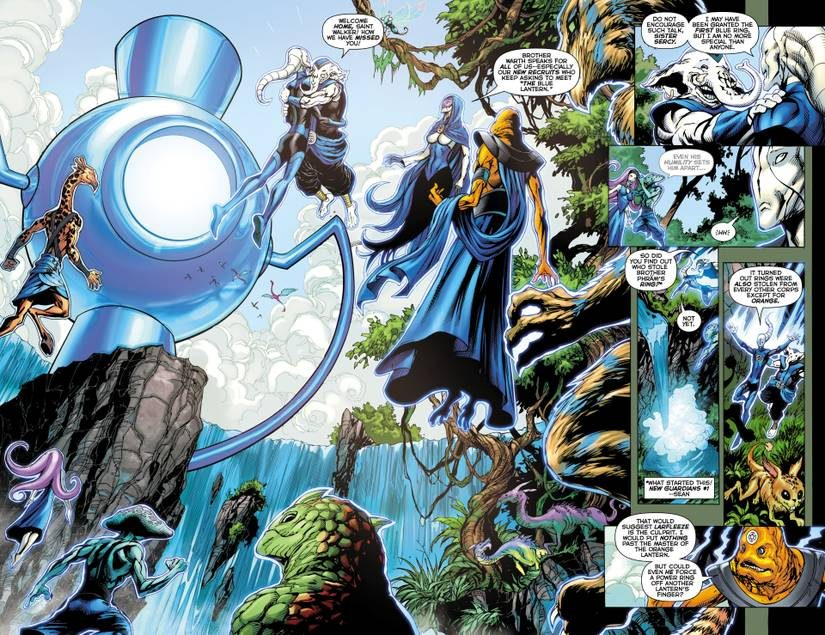
Odym
A world of impossible beauty — the Blue Lanterns' sanctuary.
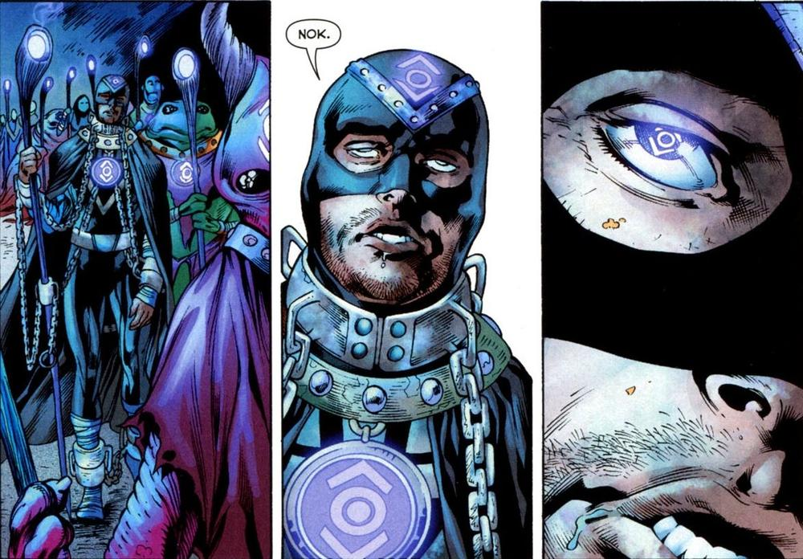
Nok
A jungle world wrapped in mystery — the Indigo Tribe's hidden home.
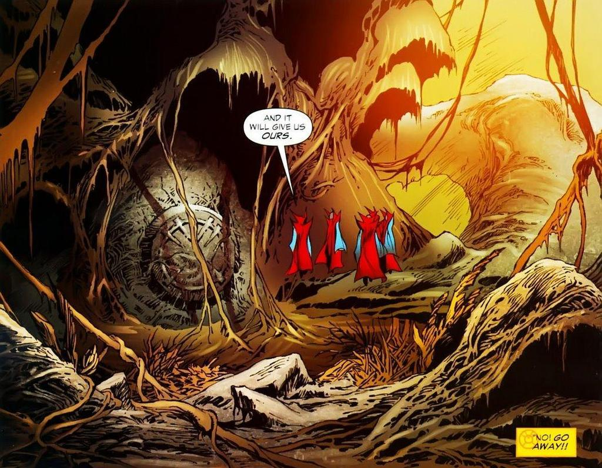
Okaara
The jungle world where greed took root — Larfleeze's hoard.
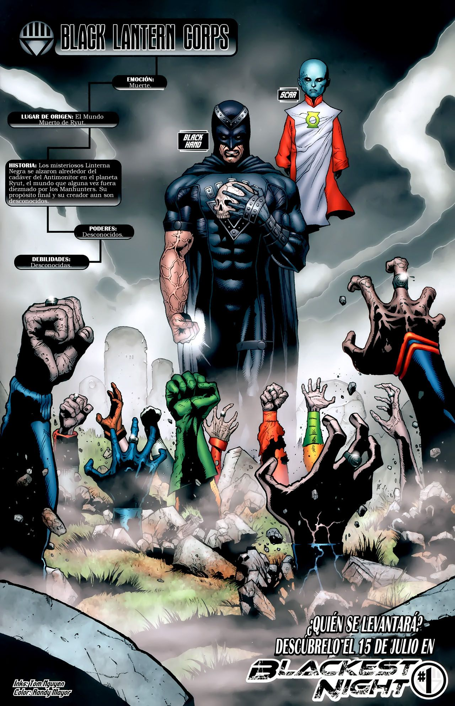
Ryut
The dead world of Sector 666 — where death built its battery.
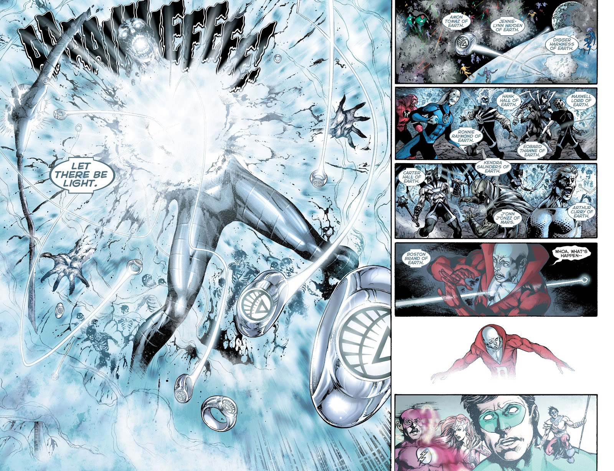
Earth
Where life itself sleeps — the White Lantern's cradle.
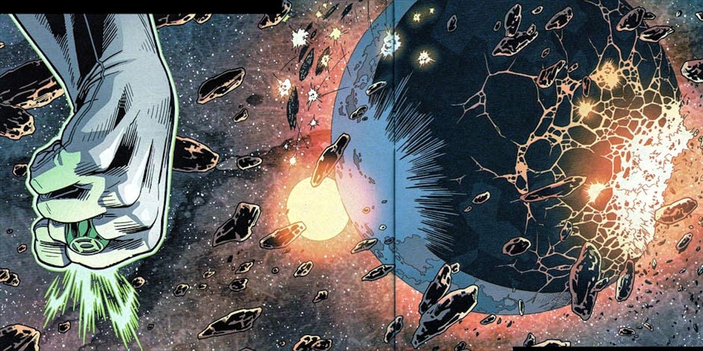
Korugar
Sinestro's homeworld — the world that fear built, and fury destroyed.
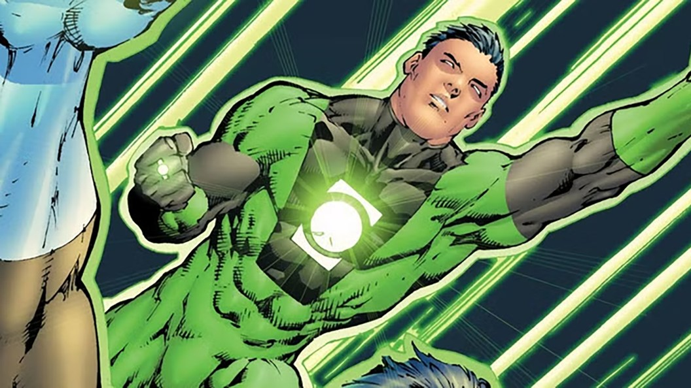
Daxam
Sodam Yat's homeworld — a world of supermen who fear the stars.
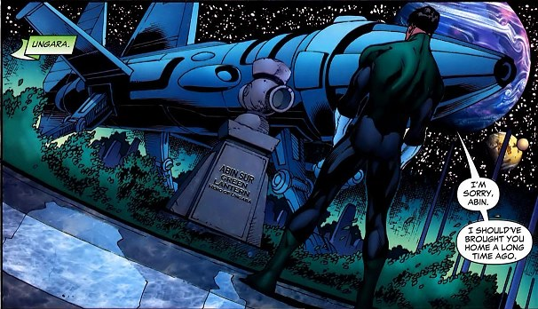
Ungara
Abin Sur's homeworld — a world of eternal spring that lost its champion.
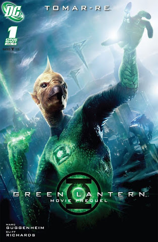
Xudar
Tomar-Re's homeworld — where science takes wing.
Artwork credits (13 images)
Credits refer to the illustrations shown here. Open a record for sources, adaptations and unresolved details. Some artwork and source pages contain story spoilers.
- Oa — Artist credit unconfirmed.
- Qward — Artist credit unconfirmed.
- Zamaron — Artist credit unconfirmed.
- Ysmault — Artist credit unconfirmed.
- Odym — Artist credit unconfirmed.
- Nok — Artist credit unconfirmed.
- Okaara — Artist credit unconfirmed.
- Ryut — Artist credit unconfirmed.
- Earth — Artist credit unconfirmed.
- Korugar — Artist credit unconfirmed.
- Daxam — Artist credit unconfirmed.
- Ungara — Artist credit unconfirmed.
- Xudar — Green Lantern Movie Prequel: Tomar-Re #1 (2011), cover. Artist credit unconfirmed.